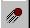
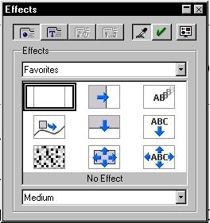
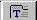

Documentation / User FAQ / Impress / Previous
How do I add Text Effects to a Text Box?
Follow these steps:
- Create your Text Box and add your content.
- Once the text is entered, Click on the Effects  toolbar button.
NOTE: The Effects button should be
located along the Left hand side of the screen in the Main Toolbar.
If you do not see it you may need to click the right arrow at the
bottom of the Main Toolbar to see the next set of buttons.
- You should see the following screen pop up.

- Now click on the Text Effects button .
- Select the effect you would like to use.
- When finished click the Check Mark Button
 to assign the effect
to your Text Object.
to assign the effect
to your Text Object.
The next time you run your Slide Show you should see the Text displayed
using the effect selected.
NOTE: The following is an alternate way of
getting to the Effects screen.
- If the Text Object is selected, click
a different object in your presentation.
- Hold CTRL and Right Click on the Text Object you would like to add
text effects to. NOTE: You should now see the text object
selected with little boxes around it instead of a shaded grey line.
- Release CTRL and Right Click on the text object.
- Click on Effects from this menu
Documentation / User FAQ / Impress / Previous